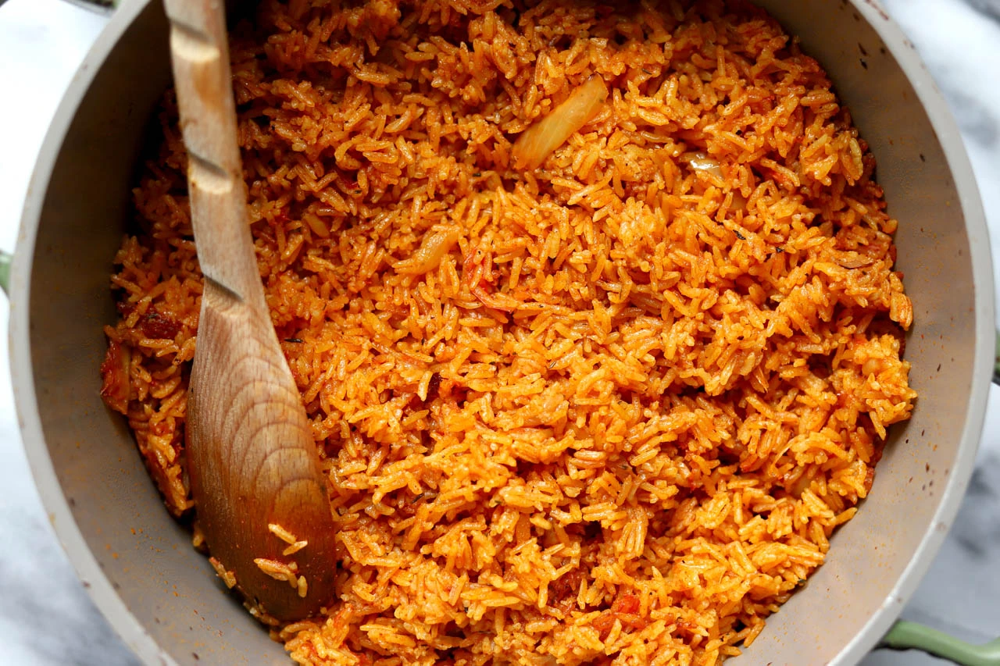

Jollof Rice Recipe
History
Jollof Rice, originally belonging to the Wolof tribe found in Senegal, Gambia and Mauritius, has spread throughout Africa, priding itself as one of Africa's most tasty and most consumed meals. It is a delicate meal, highly treasured for its aesthetic, sensory and nutritional qualities.
It is thought to have been brought to Nigeria during the transatlantic slave trade era when slaves were brought over from Africa to work in plantations in South America. The slaves would take their favorite recipes with them, including jollof rice which remained popular in Nigeria after slavery ended. Jollof rice is one of the most widely consumed dishes in West Africa. It's regarded as a national dish in Nigeria and often served with some type of meat like chicken, turkey, beef, or fish.
Regional variations are a source of competition between the countries of West Africa, and in particular Nigeria and Ghana, over whose version is the best; in the 2010s this developed into a friendly rivalry known as the "Jollof Wars". In French-speaking West Africa, a variation of the dish is known as riz au gras.
There are many different ways to cook Jollof Rice. It is a dish made with rice, tomatoes, tomato paste, onions, red bell pepper, scotch bonnet peppers, salt, and spices. If it doesn’t have the above mentioned ingredients, then it’s not true Jollof. I make it the way my mum taught me, and I usually call it Nigerian Jollof because of the type of the rice that is used. Nigerians use the long grain rice that has been parboiled. Other versions i.e. Ghanaian Jollof will use basmati or jasmine rice.
Ingredients:
- 5 medium sized Roma tomatoes, roughly chopped
- 1 red bell pepper, roughly chopped
- 2 1/2 cups of chicken stock
- 1 medium sized onion, roughly chopped, set aside
- 10 scotch bonnet peppers/habanero peppers
- 1/4 cup of groundnut oil
- 3 tbsp tomato paste
- 2 cups of parboiled rice
- 1 tsp salt to taste
- 1/2 tsp curry powder
- 1 tsp All purpose seasoning
- 1 Knorr stock cube
- 3 bay leaves
- Water, as needed
- 1/2 tsp thyme

Directions:
- Blend your tomatoes, red pepper, scotch bonnet peppers in a food processor or blender for about 45 seconds, make sure that everything is blended well.
- In a medium sized pot, heat your oil on medium-high heat. Once the oil is heated add the onions you set aside and fry just until they turn golden brown. Once the onions, have turned brown in color add the tomato paste and fry for 2-3 minutes. Then add the blended tomato mixture (reserve about 1/4 cup and set aside) and fry the mixture with the onions and tomato paste for about 30 minutes. Make sure you stir consistently so that the tomato mixture does not burn.
- 30 minutes, turn the heat down to medium, and add the chicken stock. Mix and add your seasonings (salt, curry powder, thyme, all purpose seasoning, and the Knorr stock cube). Continue to boil for 10 minutes.
- Add the parboiled rice to the pot. Mix it very well with the tomato stew. At this point if you need to add water so that the rice is level with the tomato mixture/chicken stock go ahead and do so. Add the bay leaves, cover the pot, and cook on medium to low heat for 15-30 minutes.
- When the liquid has almost dried up add the remaining tomato stew, cover, and let it cook for another 5-10 minutes heat until the liquid has completely dried up. Turn off the heat, mix thoroughly, and your Jollof Rice is ready.
Video:
Jollof Rice
Sources:
Eve eats- Jollof rice